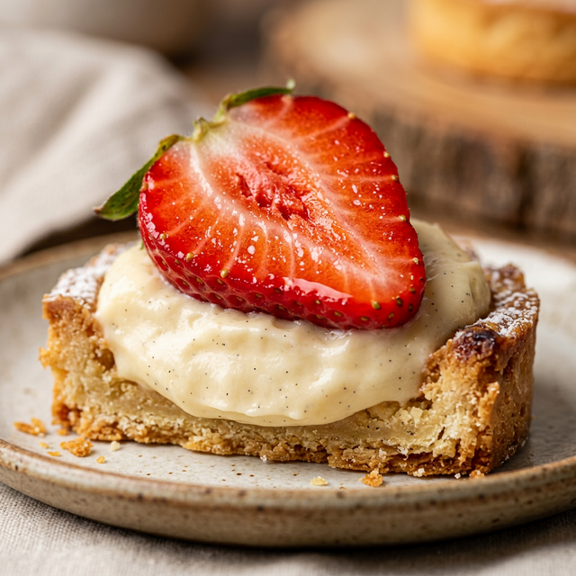
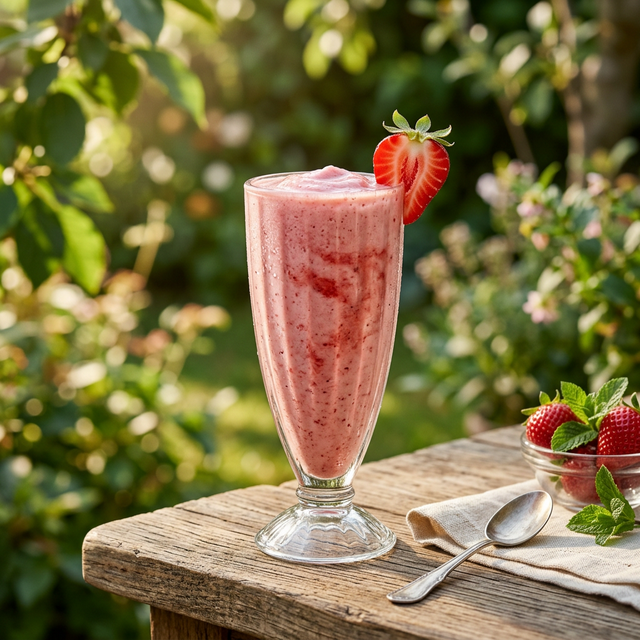
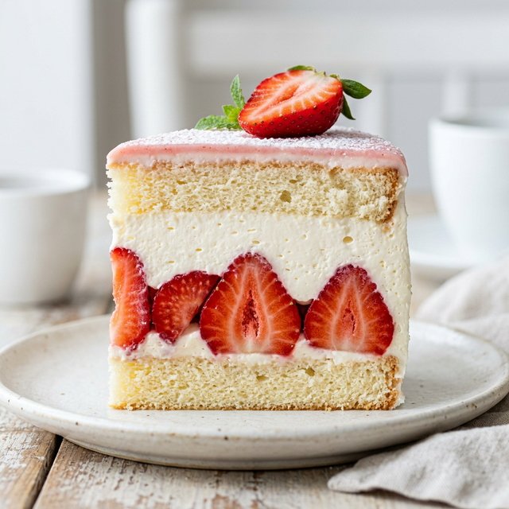
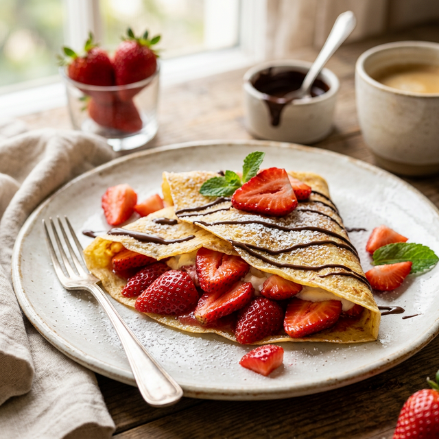
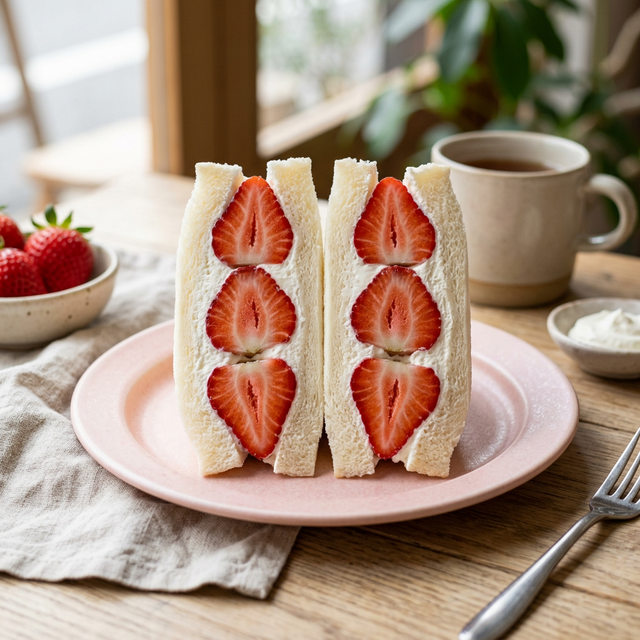
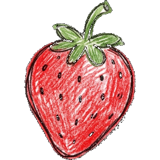

EVERYDAYSTRAWBERRY
우리가 사랑하는 과일, 딸기의 모든 것
VARIETIES
다양한 품종의 딸기를 소개합니다.
각기 다른 당도, 식감, 향기를 지닌 고유한 품종들을 엄선했습니다.
취향에 맞는 완벽한 딸기를 찾아보세요.
설향 Seolhyang
대한민국을 대표하는 가장 대중적이고 사랑받는 품종입니다. 한 입 베어 무는 순간 입안 가득 터지는 풍부한 과즙과 부드러운 텍스처가 특징이며, 산미와 단맛의 밸런스가 뛰어나 누구나 호불호 없이 즐길 수 있습니다.
자세히 보기 →육보 Yukbo
아삭하고 단단한 조직감을 선호하시는 분들을 위한 품종입니다. 씹을수록 배어 나오는 깊고 묵직한 새콤달콤함이 매력적이며, 쉽게 무르지 않아 보관기간이 길고 디저트의 가니쉬용으로도 탁월한 선택입니다.
자세히 보기 →아키히메 Akihime
산미를 거의 느낄 수 없이 달콤함에 완전히 집중된 하이엔드 품종입니다. 길쭉하고 유려한 실루엣이 특징이며, 솜사탕처럼 부드럽게 녹아내리는 극강의 단맛이 디저트로서의 품격을 한 단계 높여줍니다.
자세히 보기 →VITAMIN C
비타민 C
새빨간 딸기에는 사과의 10배, 레몬의 2배에 달하는 풍부한 순수 비타민 C가 함유되어 있습니다. 강력한 항산화 작용을 통해 일상에 지친 피부 장벽을 탄탄하게 회복시키고, 칙칙해진 안색을 모세혈관 끝까지 투명하고 생기 있게 밝혀줍니다.
LYCOPENE
라이코펜
딸기 특유의 매혹적이고 탐스러운 붉은빛은 라이코펜 성분에서 비롯됩니다. 뛰어난 항산화력으로 피부 세포의 노화를 극적으로 지연시키며, 세월의 흐름에도 흔들림 없는 단단한 탄력과 건강한 면역력을 꾸준히 유지해 줍니다.
ANTHOCYANIN
안토시아닌
붉은 딸기 속에 조용히 깃든 안토시아닌은 자연이 선사하는 진정한 시력 보호막입니다. 장시간 스마트폰과 디지털 기기 사용으로 누적된 현대인의 눈 피로를 부드럽게 완화하고, 시리도록 맑고 투명한 눈의 컨디션을 즉각적으로 되찾아줍니다.
PECTIN
펙틴
입안에서 사르르 녹는 달콤한 딸기 과육의 비밀은 바로 수용성 식이섬유인 펙틴입니다. 장내에 축적된 불필요한 노폐물과 나쁜 콜레스테롤을 스펀지처럼 흡착해 배출시키며, 몸속 깊은 곳부터 한결 가벼워지는 이상적인 정화 작용을 유도합니다.
POTASSIUM
칼륨
크고 탐스러운 딸기에 풍부하게 함유된 칼륨은 우리 몸의 붓기를 빼주는 훌륭한 조력자입니다. 맵고 짠 현대인의 식습관으로 체내에 쌓인 정체된 나트륨 배출을 원활하게 돕고, 불필요한 수분을 제거해 언제나 깃털처럼 산뜻한 일상을 만들어 줍니다.
FISETIN
피세틴
자연계 식물 중에서도 극히 드물게 딸기에 다량 함유된 피세틴은 뇌 세포를 보호하는 마스터 카드입니다. 노화 질환으로 인한 필연적인 인지 기능 저하를 강력히 방지하고 명료한 기억력을 보존하여, 오랜 시간 변치 않는 맑은 두뇌와 총명함을 지원합니다.





딸기로 즐기는 디저트
Strawberry Desserts
Let's go eat some strawberries!
